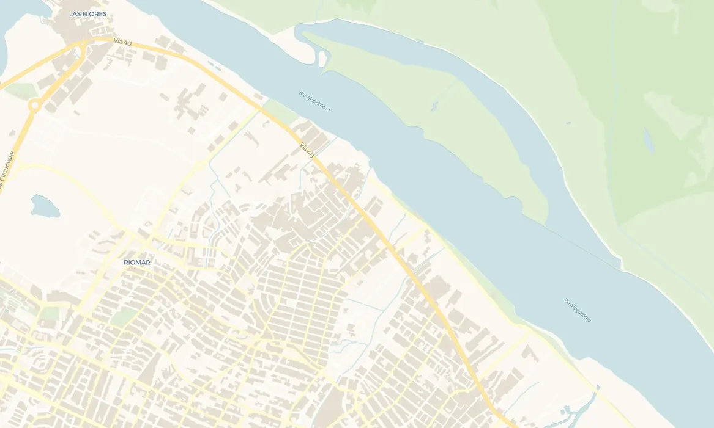

Pasajeros que no se van
Quien ve su bus a ocho cuadras lo espera, en lugar de tomar un colectivo o un mototaxi.
Permitido u oculto, bus por bus
Cada bus en el mapa, en tiempo real, con su placa y su ruta. Desde la oficina usted ve cuáles están en servicio, cuáles perdieron la señal y cuáles ven sus pasajeros; esto último lo decide usted, bus por bus.
Sin buses registrados

© OpenStreetMap · © CARTO
Quien no sabe si su bus viene toma el primero que pase. Cada uno de sus buses en el mapa es una razón para esperarlo.
Quien ve su bus a ocho cuadras lo espera, en lugar de tomar un colectivo o un mototaxi.
Permitido u oculto, bus por bus
Dos buses de la misma ruta demasiado próximos se detectan desde la oficina, al instante.
La ruta entera, en vivo
Consulte cuántos buses hay en servicio y dónde se abre un vacío.
Filtro por ruta y estado
Estamos sumando las primeras empresas de Barranquilla. Sea de las primeras.
El número de buses y las rutas que cubren se definen con cada empresa. Déjenos sus datos y nos comunicaremos con usted.